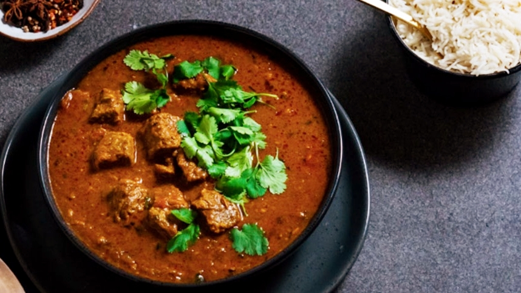

Lamb Vindaloo

A spicy Indian dish. One of my favorites
Ingredients
- 4 lamb shanks
- 1/2 cup cider vinegar
- 1/4 cup vegetable oil
- 2 teaspoons salt
- 1 tablespoon tamarind concentrate
- 1 1/2 tablespoons garam masala
- 1 onion
- 8 cloves garlic
- 1/3 cup sliced fresh ginger
- 1 cup cherry tomatoes
- 1/2 cup water
- 1 1/2 teaspoons cayenne pepper
- 1 1/2 teaspoons paprika
- 1 teaspoon ground cinnamon
- 1 teaspoon ground cumin
- 1 teaspoon ground mustard
- 1 teaspoon ground black pepper
- 3 tablespoons ghee (clarified butter)
- 1 large onion, chopped
- salt and pepper to taste
- 4 teaspoons brown sugar
- 1/2 cup fresh cilantro, for garnish (optional)
Steps
- Place lamb shanks in a large resealable plastic bag. Whisk together cider vinegar, oil, salt, tamarind concentrate and garam masala in a bowl and pour into the bag. Squeeze out excess air and seal the bag. Marinate in the refrigerator for 8 hours or overnight.
- Preheat the oven to 230 degrees C (450 degrees F). Grease a foil-lined baking sheet.
- Remove marinated lamb shanks and place on the prepared baking sheet. Season all sides with salt. Roast in the preheated oven until well-browned, 15-20 minutes. Reserve marinade in the bag.
- Combine 1 onion, garlic, ginger, cherry tomatoes and water in a blender and blend until smooth. Set aside.
- Combine cayenne pepper, paprika, cinnamon, cumin, dried mustard and black pepper in a small bowl.
- Melt clarified butter in a large stockpot over medium-high heat. Cook and stir 1 onion until softened and well-browned, about 30 minutes. Reduce heat to medium and pour in cayenne pepper mixture. Cook and stir until spices are aromatic, about 2 minutes.
- Pour marinade from the bag into the stockpot and stir in tomato-onion mixture and brown sugar. Bring mixture to a simmer. Place lamb shanks in the pan and reduce heat to low. Cover and cook, turning occasionally, until meat is tender and easily pierced with a fork, 3-4 hours.
- Remove lamb from the pot and cover with foil. Increase heat and simmer the sauce for a few minutes, skimming the far from the top. Taste and add salt if needed. Serve lamb shanks with sauce spooned over the top. Garnish with cilantro.